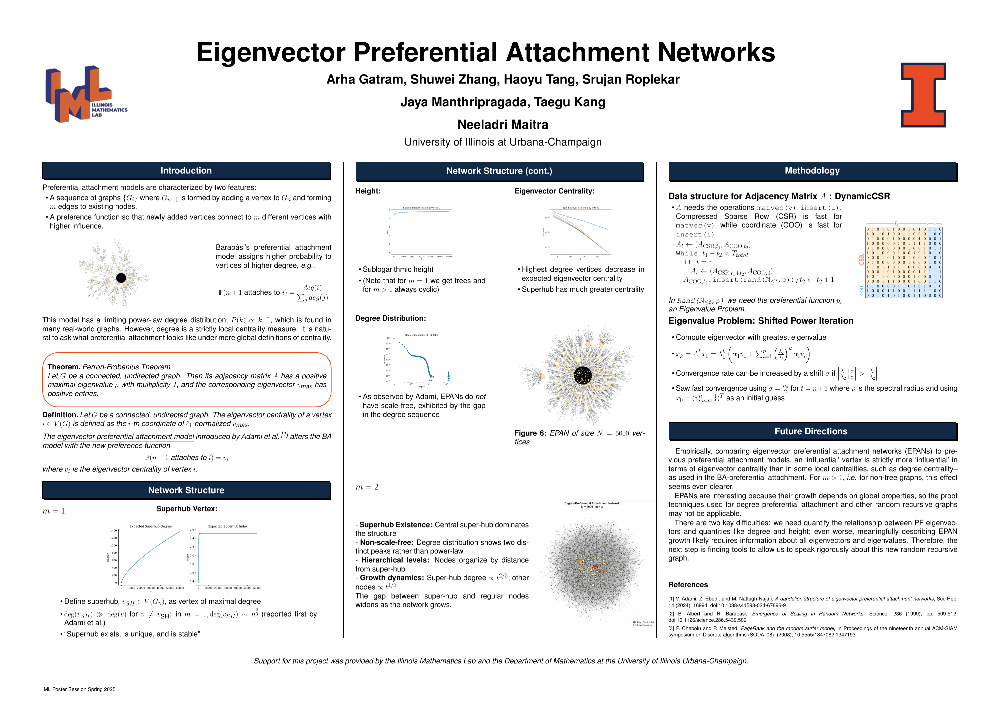

Illinois Math Lab ↗
Sparse Small-World Networks: Geometry and First-Passage Percolation
Along with Partha S. Dey and Neeladri Maitra (faculty advisors), Daecheol Kim (graduate student leader, along with me), and four undergraduate student scholars.
Eigenvector Centrality Preferential Attachment Trees
Along with Neeladri Maitra (faculty advisor), Taegu Kang (graduate student leader, along with me), and four undergraduate student scholars: Arha Gatram, Shuwei Zhang, Haoyu Tang, and Srujan Roplekar.
Winner of the 2026 IML Research Award ↗
Directed Reading Program ↗
Random Graphs and Complex Networks
Mentored undergraduate students in foundational random graph models and network theory.
Seminar organization
Graduate Probability Seminar at UIUC ↗
Projects
Friend-of-a-Friend Network Analysis
Studied the evolution of degree distributions in friend-of-a-friend (FOAF) networks. Simulated random graphs using graph-tool and proved a Central Limit Theorem for the number of connections.
Black–Scholes & Markowitz Portfolio Simulator
Developed a Python model comparing stochastic asset paths under the Black–Scholes model and efficient frontier optimization using Markowitz theory. Implemented in NumPy and Matplotlib with interactive sliders for volatility.